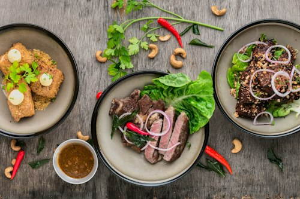

La comida es una de las mejores formas de conocer otras culturas. En este proyecto, quiero compartir algunos de los platos más icónicos de diferentes partes del mundo.
Cada receta tiene su propia historia, ingredientes típicos y un sabor único. En esta página iremos viendo diferentes opciones para todos los gustos.
Desde el horno de leña napolitano hasta las barras tradicionales de Tokio y los puestos callejeros de Ciudad de México, cada plato refleja la identidad de su región y el saber hacer transmitido entre generaciones.

El secreto de la cocina internacional reside en respetar las materias primas originales: albahaca fresca y mozzarella en Italia, pescado de corte preciso en Japón o especias y chiles marinados en México.
Combinar estos productos permite descubrir contrastes de sabores dulces, salados, ácidos y picantes en una misma mesa.
A continuación se muestran las tres especialidades principales que forman parte de este recorrido gastronómico:
Para aprender más sobre recetas e ingredientes, visita esta web de cocina.
Puedes ver los datos estructurados en mi archivo datos.xml.